发表于 ICLR 2017 · Oral | 组内论文精读
用于图像超分辨率的
摊销 MAP 推断
Amortised MAP Inference for Image Super-Resolution · AffGAN
Casper Kaae Sønderby, Jose Caballero, Lucas Theis,
Wenzhe Shi & Ferenc Huszár
Twitter（伦敦） · 哥本哈根大学
主线：MAP → 仿射投影 → 交叉熵 → 三种求解方法
全文总览
四个 Part，一条主线：MAP → 投影 → 交叉熵 → 三种求解方法
① MAP 推断
为什么要"取众数"
→
② 仿射投影
本文核心架构创新
→
③ 交叉熵
MAP 目标的化归
→
④ 三种解法
GAN / 去噪 / 密度
Part 1 · 背景
从 SR 多解性出发，先讲清"点估计"，再引出 MAP 取众数 的动机（含与 PRSR 的区别）。
Part 2 · 方法
仿射投影层锁住有效解 → MAP 化归为交叉熵 → 三法 GAN/去噪/密度求解。
Part 3 · 实验
瑞士卷 → 仿射投影验证 → 草地 → CelebA → ImageNet；本文报告 AffGAN 的视觉效果最好。
Part 4 · 总结
高维"众数非典型"的反思；扩展为摊销变分推断（从后验采样）的未来方向。
PART 1 / 4
1
背景与动机
Background & Motivation — 为什么放弃 MSE、转向 MAP
与 Pixel Recursive SR 的区别
什么是点估计
点估计三兄弟（mean/median/mode）
Figure 1 · 瑞士卷
为什么 MAP 以前少用
背景 · 方法 · 实验 · 总结
从我们已知的出发
先接上旧知识：和 Pixel Recursive SR 有何不同？
一句话区别 ▸ PRSR 显式建模条件分布并逐像素采样；确定性 AffGAN 不显式计算图像密度，而用前馈网络学习近似 MAP 解。论文 §5.6 还讨论了改用后验采样的方向。
扫盲 ① · 预备 什么是"点估计"
先问一句：什么是"点估计 point estimation"？
贝叶斯给我们的是一整条分布，但最终只能输出一张确定的图——必须从分布里挑一个"代表点"。
- 完整贝叶斯：给出整条后验 p(y|x)——所有可能解 + 各自概率
- 但落地要一个确定输出 → 用单个值/向量去概括整条分布，这就是 点估计
- "挑哪个点"有不同策略 → 下一页的 均值 / 中位数 / 众数
和 PRSR 对照 ▸ PRSR 直接采样整条分布、给多样解；本文走点估计，只取一个代表点（MAP）。两条路在 §5.6 又会重新交汇。
扫盲 ① 主题一 · 贝叶斯点估计（MAP / MLE / 后验均值）
点估计"三兄弟"：均值 mean / 中位数 median / 众数 mode
同一条后验分布 posterior p(y|x)，你选的损失函数不同，"贝叶斯最优答案"就落在不同位置。
| 损失函数 Loss | 贝叶斯最优解 | 特点 |
|---|
| 平方损失 · MSE | 后验均值 mean | 易糊 |
| 绝对损失 · MAE | 后验中位数 median | 较稳健 |
| 0–1 损失（离散情形） | 后验众数 mode = MAP | 避免多解平均 |
关键 ▸ 三者对应不同准则。SR 多解时，均值可能把不同纹理平均成模糊结果；众数 mode 则选择后验密度最高的位置。这是本文采用 MAP 的动机，但高维下众数未必典型。
MAP
Maximum a Posteriori · 最大后验
argmaxy p(y|x)，取后验最大的点（= 众数 mode）。本文的目标。
MLE
Maximum Likelihood Estimation · 最大似然
只看似然 p(x|y)、不含先验；= 均匀（平坦）先验下的 MAP。
后验 Posterior
posterior ∝ likelihood × prior
p(y|x) ∝ p(x|y) · p(y)。MAP 就在它上面取峰值。
mode / mean / median
众数 / 均值 / 中位数
分布的"峰值 / 重心 / 中点"，分别是 MAP / MSE / MAE 的最优解。
核心图 · Figure 1 ＋ Table 1
不是"唯一还原"，而是在满足约束的候选里挑最像真实分布的点
低清 x 给的不是答案，而是一个约束；好解还要落在真实图像分布的高概率区。
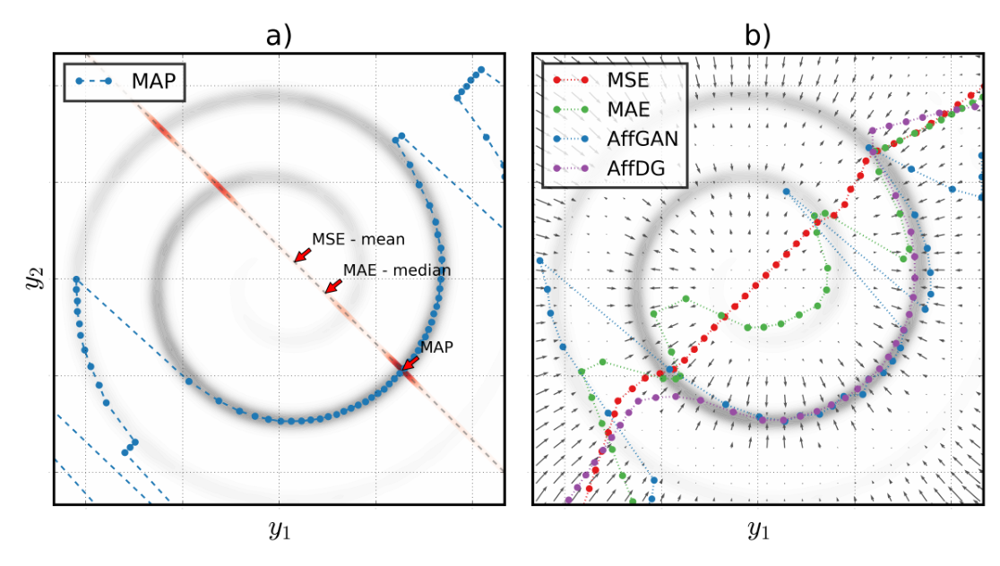
Figure 1：HR 数据 y=[y₁,y₂]~瑞士卷（灰，越深越像真实）；下采样 x=(y₁+y₂)/2。(a) 给定 x=0.5，有效解落在橙线 y₂=1−y₁，红色阴影=后验 p(y|x=0.5)。(b) 扫 x∈[−8,8] 各模型输出 ＋ 去噪梯度场。
注意：图中彩色点是各方法对不同 x 的 SR 输出，不是瑞士卷数据点——图 a 蓝点 = MAP；图 b 红 = MSE／绿 = MAE／蓝 = AffGAN／紫 = AffDG（同是蓝点，a 是 MAP、b 是 AffGAN）。
① 约束：Ay=x → 橙线
→
② 后验：先验沿橙线切片
→
③ 选点：mean / median / mode
→
④ 结果：Table 1
Table 1 · 直接估计的交叉熵（10 次随机初始化平均）
| 方法 | \( H[q_\theta,p_Y] \)
越低＝平均先验密度越高 | \( \ell_{\mathrm{MSE}}(x,A\hat y) \)
一致性 |
|---|
| MAP（暴力解） | 3.15 | — |
| MSE | 9.10 | 1.25·10⁻² |
| MAE | 6.30 | 4.04·10⁻² |
| AffGAN | 4.10 | 0.0 |
| SoftGAN | 4.25 | 8.87·10⁻² |
| AffDG | 3.81 | 0.0 |
| SoftDG | 4.19 | 1.01·10⁻¹ |
读表 ▸ AffGAN／AffDG 的交叉熵 ≈ MAP（3.15）→ 确实落在高概率区；MSE 9.10、MAE 6.30 明显跑偏。一致性 \( \ell_{\mathrm{MSE}} \)：Aff（投影）= 0 严格满足，Soft（软约束）≠ 0。
背景 · 一个自然的疑问
MAP 有望避免平均模糊，为什么以前很少用？
MAP 有明确动机，但也有两道坎；本文把近似 MAP 做成了可训练的前馈模型。
MAP 以前的两道坎
①
要知道"真实图像长什么样"：MAP 需要图像先验 pY(y)。可它是几十万～百万维的分布，极难建模——你不容易知道哪个 y 概率最大。
②
还要做高维优化：即便有先验，也要解 \( \operatorname*{argmax}_y p_Y(y)\ \text{s.t.}\ Ay=x \)——非凸、多峰，每张图都要搜索，慢。
所以大家用 MSE ▸ 简单、稳定、好训练、收敛快，而且 PSNR 高（PSNR 与 MSE 强相关）。代价是把多种纹理平均→糊。
本文怎么破这两道坎
①
摊销：训练网络 fθ 代替"逐样本优化" → 前馈一次出图（破"慢"）。
②
仿射投影层：把约束 Ay=x 变成结构强制（破"约束"）。
③
GAN / 去噪梯度：把输出推向高概率区，免显式建模 pY（破"先验"）。
三招 ▸ 正好对应下面 Part 2 的展开顺序：摊销 → 仿射投影 → 交叉熵 / 三法。
一句话 ▸ 不是不知道 MAP 更合理，而是过去先验难建、优化难解；本文用摊销 + 投影 + GAN/去噪把 MAP 做成了可训练的前馈 SR。（MAP 只取一个众数、不表达不确定性——想要多样解见 §5.6 / 附录 F 的"采样"扩展。）
PART 2 / 4
2
方法
Method — 仿射投影 · 交叉熵化归 · 三种解法
摊销 MAP（一次训练）
零空间 / 伪逆
仿射投影层 (式7)
MAP → 交叉熵 (式9)
熵 / KL
GAN 运用 vs SRGAN
① AffGAN
实例噪声
② AffDG
③ AffLL
背景 · 方法 · 实验 · 总结
理论 · §3 · 摊销 MAP 推断
什么是"摊销 MAP 推断"？传统 MAP vs 摊销 MAP
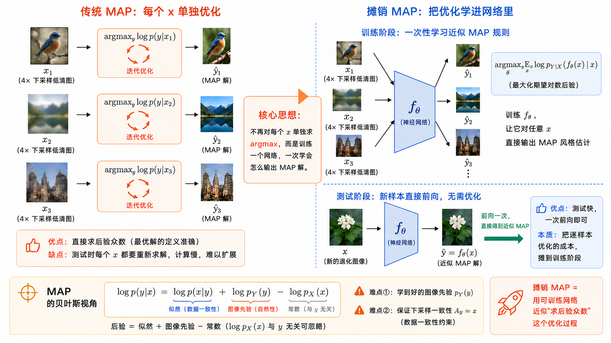
一句话 ▸ 摊销 = 不再对每个 x 单独求 argmax，而是训练一个网络一次学会输出 MAP 解，测试时前向一次直接出图。贝叶斯分解 \( \log p(y|x)=\log p(x|y)+\log p_Y(y)-\log p_X(x) \)：后验 = 似然 ＋ 图像先验 − 常数；难点在图像先验 pY 与一致性约束 Ay=x（本部分逐一展开）。
扫盲 ② 主题三·线性代数
三个词先讲清：列空间 · 零空间 · 伪逆
- 列空间 Column Space（像 / 值域）：矩阵 A 能"打到"的所有方向
- 零空间 Null Space（核）：被 A 压成 0 的方向 —— 沿它走，下采样结果不变
- 伪逆 A⁺（Moore–Penrose Pseudoinverse）：最稳的"反操作"，满足 A A⁺A = A
把残差 (I − A⁺A)f 放进零空间，无论 f 输出啥，下采样回去恒等于 x。这就是下一页"一致性被结构强制"的几何根源。
核心创新 · §3.1 · 式(7)
本文最硬核的创新：仿射投影层
\[ g_\theta(x)=\textcolor{#1a4f8a}{\Pi_x^{A}}\,f_\theta(x)=\textcolor{#2f8a5b}{(I-A^{+}A)\,f_\theta(x)}+\textcolor{#1a4f8a}{A^{+}x} \]
残差：落在 A 的零空间，下采样恒为 0 | 基线解：把 LR 直接上采样，保证低频正确
- 在论文的无噪线性模型 x=Ay 且 A⁺ 准确时，输出经下采样精确还原 x
- A⁺ 以转置卷积操作实现，但卷积核需数值求解；A⁺ ≠ Aᵀ
- 适用于输出 HR 图像、且已知线性退化算子 A 的可训练 SR 网络
为何重要 ▸ 有了它，约束优化 → 无约束优化，MAP 目标才能进一步化归成"交叉熵最小化"（下一页）。
关键化归 · §3.1 · 式(9)
魔法一步：MAP 推断 = 最小化交叉熵
\[ \operatorname*{argmax}_{\theta}\,\mathbb{E}_{x}\,\log p_Y\!\big(\Pi_x^{A} f_\theta(x)\big)\;=\;\textcolor{#1a4f8a}{\operatorname*{argmin}_{\theta}\,H[\,q_\theta,\,p_Y\,]} \]
qθ = 模型输出在随机 LR 上诱导的分布；pY = 真实 HR 图像分布
不再需要成对回归
训练只需 LR、HR 样本和已知 A；目标是让输出在真实图像先验下取得较高平均密度，并不自动保证 qθ=pY。
更像生成式建模
问题摇身一变成了无监督 / 生成式任务——这正是能搬出 GAN、去噪、密度模型三种武器的原因。
💡 译者注 ▸ 交叉熵 H[qθ,pY] = 𝔼ŷ~qθ[−log pY(ŷ)]：让模型生成的每张图，在真实图像先验下都尽量"高概率"。但直接算它不可行 → 需要三种近似方法。
扫盲 ③ 主题二·信息论
熵 / 交叉熵 / KL：用"编码花几个 bit"来记
用"发送消息要花多少 bit"的直观物理视角，理清这三个概念的数学关系与几何桥梁。
\[ H[q,p]=H[q]+\mathrm{KL}[q\,\|\,p] \]
交叉熵 = 自身熵 + KL 散度
核心推论 ▸ 恒等式 H[q,p] − KL[q‖p] = H[q] 后面会立大功：
• 在最大似然估计（MLE）中，是以真实分布为基准，故最小化交叉熵 ⟺ 最小化 KL 散度；
• 但在本文的 MAP 目标中，第一项是模型诱导分布 qθ，其自身熵并不固定。GAN 实际最小化的 KL 散度与我们想最小化的交叉熵正好差了一个 H[qθ]（即"熵奖励"，详见第 18 页）。
熵 H[q]
最优编码长度 · Entropy
用基于 q 自身定制的最优编码表，理论上发送 q 分布的消息平均最少需要花的 bit 数。
交叉熵 H[q,p]
错配编码长度 · Cross Entropy
实际符号分布是 q，却使用 p 的编码表；H[q,p] 是平均总编码长度，超出 H[q] 的部分才是 KL。
KL 散度 KL[q‖p]
冗余开销/溢价 · KL Divergence
因为错用 p 的编码表而多花的那部分 bit（即 H[q,p] − H[q]），衡量两个分布的差异。
方法总览 · §3.2–3.4
最小化交叉熵的三件武器
共同起点：先经仿射投影得到输出分布 qθ，统一目标都是
\( \min_\theta H[q_\theta,\,p_Y] \)
区别在于 所用的近似或替代目标
① AffGAN 生成对抗 GAN
机制
训练判别器 D 区分真假，生成器按修正规则最小化 KL[qθ‖pY]，作为交叉熵 MAP 目标的带熵替代。
关键式
\( D^{*}=\dfrac{p_Y}{p_Y+q_G} \)
本文实验最佳 本文真实图像实验中视觉效果最好
② AffDG 去噪器引导
机制
贝叶斯最优去噪器 ≈ 估计 ∇ log pY，把梯度按链式法则反传进 SR 网络做梯度上升。
关键式
\( \dfrac{f^{*}(\tilde y)-\tilde y}{\sigma^{2}}\approx\nabla\log p_Y \)
score 同源 与当今 score-based / 扩散模型思想相关，但训练流程不同
③ AffLL 密度引导
机制
用最大似然训练的显式密度模型当先验，最小化生成样本的负对数似然来引导。
关键式
\( -\log p_{\mathrm{model}}(\hat y) \)
额外模块
PixelCNN + MCGSM 密度模型
最直接基线 更直接，但实测偏模糊
剧透 ▸ 三者都需要"额外训练一个模块"（判别器／去噪器／密度模型）来拿到交叉熵的近似；其中 AffGAN 在高维真实图像上视觉最佳，AffDG／AffLL 偏模糊（§5.3 + 附录 E）。下面逐一展开。
GAN 的运用 · §3.2 / §2
GAN 基础我们学过——这里怎么用？与 SRGAN 差在哪？
30 秒回顾（已知）
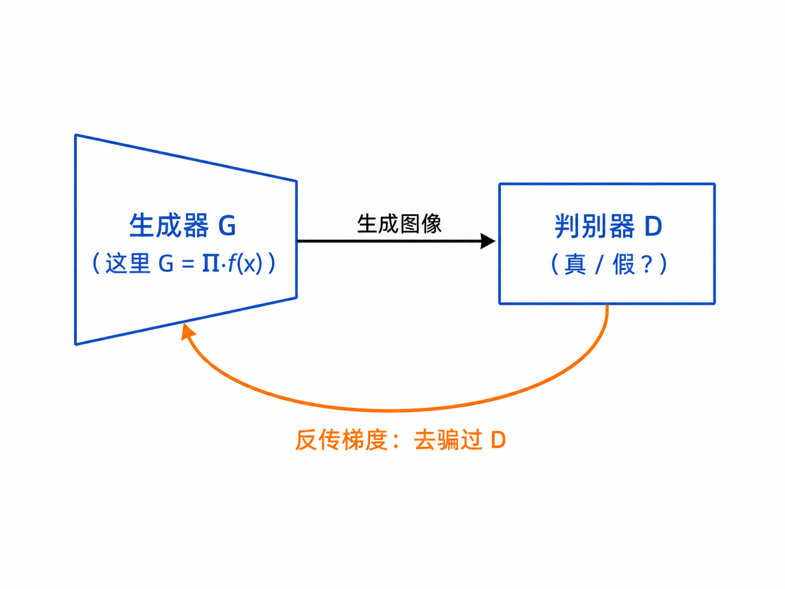
本文两处改造：① 生成器输入不是噪声 z，而是低清图 x；② 用修正的生成器更新规则最小化 KL[qθ‖pY]。它不是交叉熵 MAP 目标的严格等价形式。
| 维度 | SRGAN（Ledig 2016） | 本文 AffGAN |
|---|
| 一致性 Aŷ=x | 没有显式施加这一 LR 硬约束；依赖成对 HR 内容监督 | 在无噪线性模型下由仿射投影硬保证 |
| 损失构成 | 对抗损失 + 内容损失（VGG 特征或像素 MSE 变体） | 修正对抗目标，无需额外 VGG 内容损失 |
| 训练数据 | 必须成对 LR–HR | 原则上只需 pY、pX 的样本 |
| 理论解释 | 以感知损失和对抗训练提高视觉质量 | 修正 GAN 最小化反向 KL，作为 MAP 交叉熵目标的替代 |
| 观测模型 | 由成对 LR–HR 数据定义退化关系 | 明确假设无噪线性模型 x=Ay |
| 稳定化技巧 | 常规 GAN trick | 实例噪声（退火，不引入偏差） |
一句话 ▸ SRGAN 把对抗损失与内容损失结合；AffGAN 从摊销 MAP 与仿射投影出发，为使用生成式目标提供概率解释，但 KL 与纯 MAP 交叉熵并不严格等价。
方法一 · §3.2
AffGAN：把仿射投影的 SR 函数当作生成器
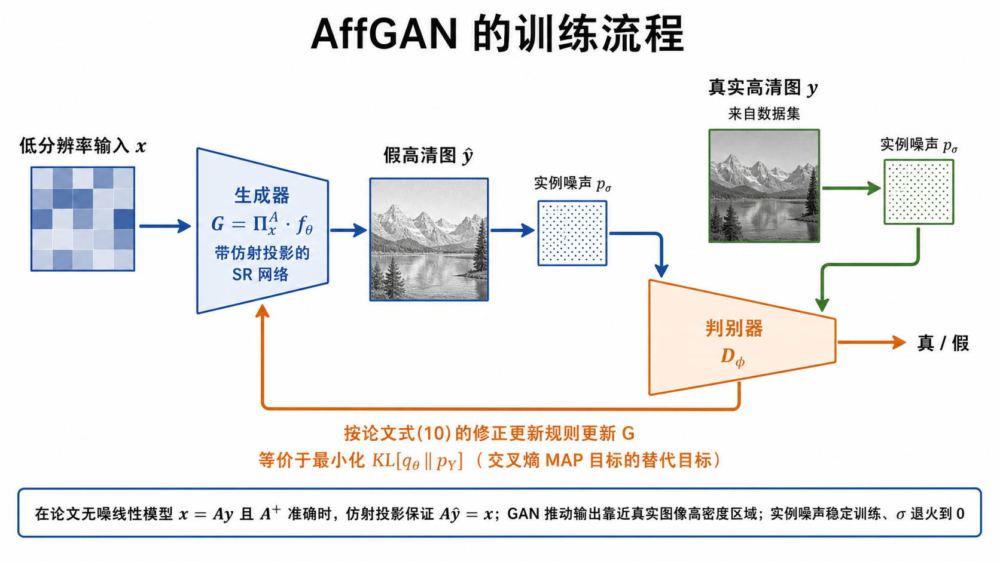
为什么组合有效 ▸ 在 x=Ay 的无噪线性模型下，投影负责一致性；GAN 负责把输出推向真实图像高密度区域。训练不需成对回归，但需要 pX、pY 样本和已知 A。SoftGAN 则改用软约束 ℓLR=MAE(x,Aŷ)。
一个有益的副作用 · §3.2
彩蛋：GAN 的"熵奖励"偏好更高熵、更多样的解
\[ \textcolor{#1a4f8a}{H[q_\theta,p_Y]}\;-\;\textcolor{#c0563a}{\mathrm{KL}[q_\theta\,\|\,p_Y]}\;=\;\textcolor{#2f8a5b}{H[q_\theta]} \]
我们真正想要的（MAP 目标） − GAN 实际最小化的 = qθ 自身的熵
差了一个 −H[qθ]
GAN 最小化 KL，比"纯 MAP 目标"多奖励了边缘输出分布的熵；确定性模型对同一个 x 仍只输出一个结果。
因此 AffGAN 偏好
更高熵、更多样的近似 MAP 解；§5.6 还指出它对坐标变换更具韧性（H[qθ] 同步变换）。
💡 译者注 ▸ 我们真正想最小化的是交叉熵；GAN 实际最小化 KL，两者相差 qθ 的熵。这意味着 GAN 在逼近 MAP 的同时额外奖励多样性——一个有益的副作用。
稳定 GAN 的技巧 · §3.2.1 · Figure 6
GAN 为何不稳定？实例噪声来救场
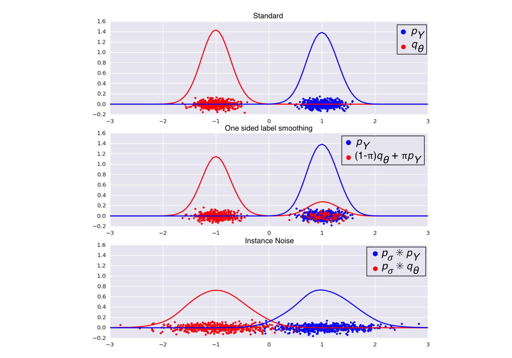
Figure 6：(a) 标准——两分布几乎不重叠，无数个判别器都能分开它们；(b) 单边标签平滑——移动了决策边界，但 pY 仍覆盖 qθ 无支撑的区域；(c) 实例噪声——拓宽两个分布的支撑集，且不使最优判别器产生偏差。
病因：pY 与 qθ 都是高度集中、支撑集几乎不重叠的分布 → 存在一大批"近似最优判别器"，每个给 G 的梯度都不同 → 训练发散。
\[ d_\sigma=\mathrm{KL}[\,p_\sigma \ast q_\theta\,\|\,p_\sigma \ast p_Y\,] \]
给真假样本都加高斯噪声，σ 随训练退火到 0
类比 ▸ 两条几乎不重叠的细线，判别器能用无数种方式分开它们；给两条线都"吹"一层高斯噪声，它们变胖、重叠，最优判别器变唯一、梯度稳定。优于单边标签平滑（不引入偏差）。
扫盲 ④ 主题四·score 与去噪
一个关键洞见：去噪 = 学习对数密度的梯度
\[ \frac{f^{*}(\tilde y)-\tilde y}{\sigma^{2}}\;\approx\;\nabla\log p_Y(\tilde y) \]
贝叶斯最优去噪器隐含了对数密度的梯度（式 12）
- 训练一个去噪器，"去噪输出 − 带噪输入"就近似指向 ∇ log pY
- 于是无需显式写出先验密度函数，也能估计往高密度区域移动的方向
- 与当今 score-based / 扩散模型 思想同源，但这里不是完整扩散生成过程
方法二 · §3.3
AffDG：用去噪器的梯度反传训练 SR 网络
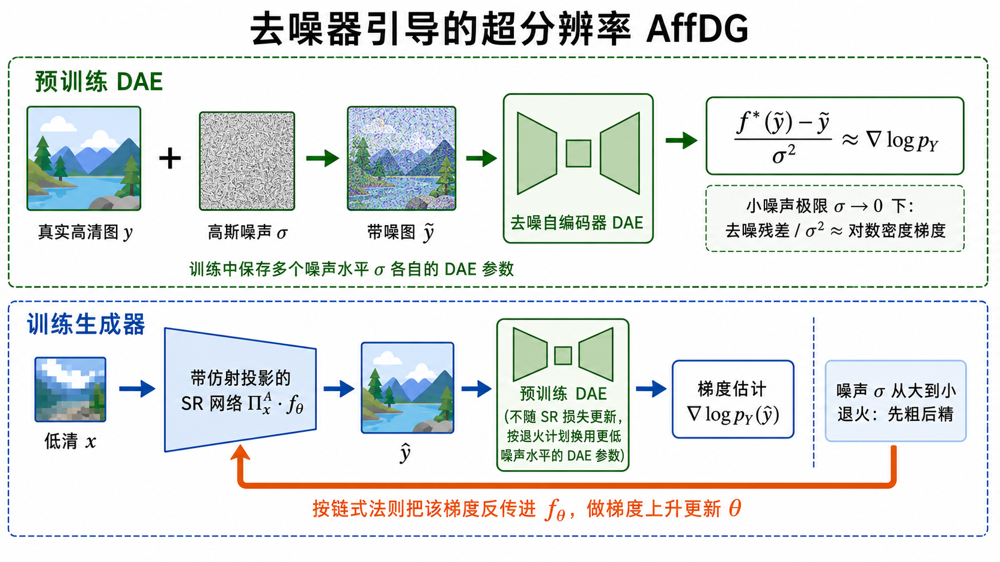
训练技巧 ▸ 噪声 σ 从大到小退火：早期梯度方向粗但覆盖广，后期贴近数据流形更精确。对照组 SoftDG=去投影。据作者所知，这是首次把去噪器输出显式反传去训练另一个网络。
方法三 · §3.4
AffLL：用显式密度模型当先验来引导
- 最直接的基线：用最大似然给 pY 拟合一个可处理却强大的密度模型
- 用"相对该生成模型的交叉熵"近似 MAP 目标
- 模型 = 类 PixelCNN 结构 + 连续可微的 MCGSM 似然（Theis 等 2012）
- LL = 由密度模型的对数似然（log-likelihood）引导
和 Pixel Recursive SR 的接口
这里正是与我们旧知识的连接点：PixelCNN 用链式法则 ∑j log p(yj|y<j) 逐像素建模密度。
区别：AffLL 不逐像素采样，而是把这个密度当"先验打分器"，去推动前馈 SR 网络的输出。
伏笔 ▸ 原始 PixelCNN 使用离散像素似然，不能直接对连续输入图像求梯度；本文改用连续可微的 MCGSM 似然。实测 AffLL 偏模糊（见后）。
PART 3 / 4
3
实验
Experiments — 从二维玩具一路走到真实图像
瑞士卷 · Table 1
仿射投影概念验证 · Fig 2
草地纹理 · Fig 3
CelebA 人脸 · Fig 4
ImageNet 自然图像 · Fig 5
背景 · 方法 · 实验 · 总结
实验 ① · §5.1 · Table 1
瑞士卷验证：AffGAN/AffDG 得到较低交叉熵
| 方法 | H[qθ, pY] | ℓMSE(x, Aŷ) |
|---|
| MAP（暴力求解） | 3.15 | — |
| MSE | 9.10 | 1.25·10⁻² |
| MAE | 6.30 | 4.04·10⁻² |
| AffGAN | 4.10 | 0.0 |
| SoftGAN | 4.25 | 8.87·10⁻² |
| AffDG | 3.81 | 0.0 |
| SoftDG | 4.19 | 1.01·10⁻¹ |
- AffGAN / AffDG 的交叉熵接近最优 MAP 解（3.15）
- MSE / MAE 差得多——因为它们根本不最小化交叉熵
- 仿射投影模型的一致性误差 恰好为 0；软约束模型只能近似
- 而且 Aff（投影）普遍优于 Soft（软约束）
回到 Figure 1(b) ▸ AffGAN/AffDG 的曲线贴住后验众数，MSE/MAE 跑进低概率区 —— 表格用数字印证了那张图。
实验 ② · §5.2 · Figure 2
概念验证：在该实验中，仿射投影未损害 SR 性能
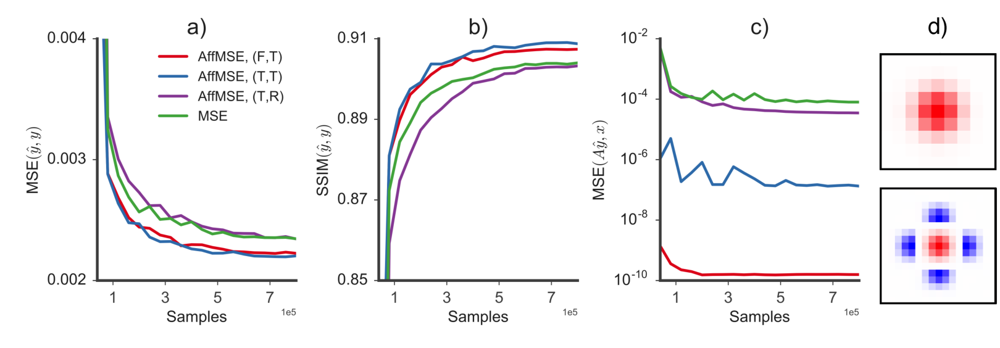
Figure 2（CelebA，MSE 目标）：(a) HR 输出与真值的 MSE；(b) SSIM；(c) LR 空间一致性 MSE(x, Aŷ)；(d) 固定的下采样核 A（上）与数值求得的上采样核 A⁺（下）。图例二元组：(F固定/T可训练投影, T已训练/R随机初始化)。
- 带投影的网络初始损失更低（低频已对齐）、训练更快
- 以 MSE / SSIM 衡量，往往还能找到更好的解（a, b）
- 关键：A⁺ 要初始化成正确的伪逆；固定或可训练都行
- (c) 精确投影把一致性误差压到≈ 0（数值精度内）
结论 ▸ 在这组 CelebA/MSE 实验中，正确初始化的投影既保证一致性，也没有牺牲性能，并常带来更快训练和更好指标。
实验 ③ · §5.3 · Figure 3
草地纹理 4×：AffGAN 最锐利
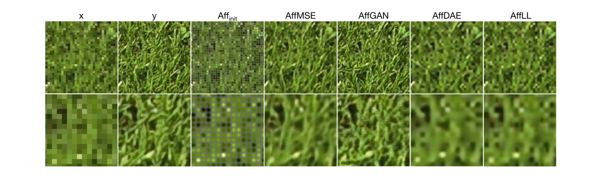
Figure 3：草地纹理 4× SR。上排为 LR 输入 x、真值 y 及各模型输出；下排为局部放大。Affinit（第三栏）= 未训练的投影模型输出，即用 A⁺ 上采样的基线解。
看点 ▸ AffGAN 显著比略糊的 AffMSE 锐利。重建并非逐像素完美，但统计属性正确，人眼一看就是草。
对照 ▸ AffDG 与 AffLL 都很模糊（多种优化都救不回来）→ 作者据此聚焦 AffGAN，其余放进附录 E。
实验 ④ · §5.4 · Figure 4 + Table 2
CelebA 人脸 4×：锐利度 vs PSNR 的权衡
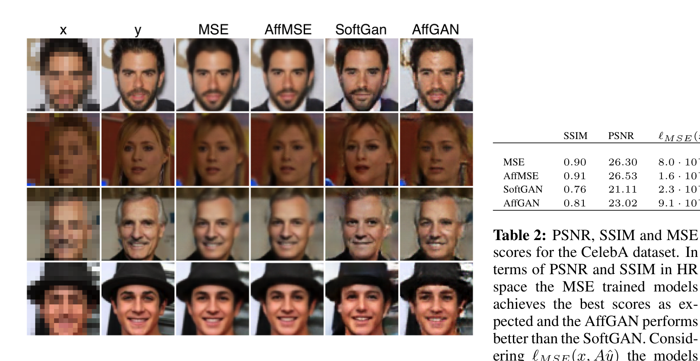
Figure 4：CelebA 人脸 4× SR。MSE 输出过度平滑；AffGAN 与 SoftGAN 都明显更锐利。AffGAN 比 SoftGAN 略锐，但高频噪声略多；SoftGAN 还有颜色漂移。
| SSIM | PSNR | Aŷ↔x |
|---|
| MSE | 0.90 | 26.30 | 8·10⁻⁵ |
| AffMSE | 0.91 | 26.53 | 1.6·10⁻¹⁰ |
| SoftGAN | 0.76 | 21.11 | 2.3·10⁻³ |
| AffGAN | 0.81 | 23.02 | 9.1·10⁻¹⁰ |
要点 ▸ PSNR/SSIM 最高的是 AffMSE（0.91 / 26.53）；AffGAN 图像更锐利，但本文没有人类偏好实验。这说明失真指标不能完整代表感知锐利度。一致性上 Aff ≫ Soft。
实验 ⑤ · §5.5 · Figure 5
ImageNet 自然图像：AffGAN 会"梦出"合理细节
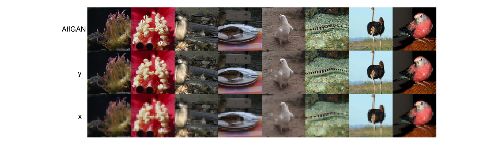
Figure 5：ImageNet 上 AffGAN 把 32×32 做 4× SR 到 128×128。上排 AffGAN 输出、中排真值 y、下排输入 x。
- 大多数图像锐利、与 LR 输入对应良好
- 仍带有 GAN 常见的高频噪声，与真值可区分
趣点 ▸ 第三列：蛇被超分成了"水"——语义错误；作者推测，在该 LR 输入下水状纹理可能具有更高先验密度。这说明生成式方法可能产生视觉合理但不真实的细节。
PART 4 / 4
4
总结与讨论
Discussion & Conclusion — 批评、延伸与回顾
高维"众数非典型"批评
AffDG / AffLL 补充 · Fig 7
摊销变分推断 · 附录 F
总结主线
Q & A
背景 · 方法 · 实验 · 总结
批评与反思 · §5.6
冷静一下：高维下"众数未必典型"
- 众数依赖表示：换个色彩空间/特征空间再做 MAP，答案可能就变了
- 测度集中：d 维高斯典型样本范数≈√d，而众数范数=0 → 众数高度非典型
- 所以纯 MAP 的"高概率"≠"看起来真实"
作者亲述 ▸ "肥皂泡"比喻正出自本文作者 Ferenc Huszár 的博客。这为把 AffGAN 扩展成从后验采样（变分推断）埋下伏笔。
补充结果 · 附录 E · Figure 7
为何 AffDG / AffLL 收敛却模糊？
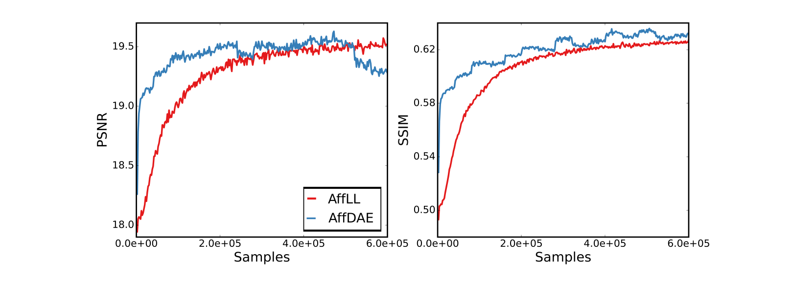
Figure 7：草地纹理上 AffDG 与 AffLL 的 PSNR / SSIM 训练曲线。模型确实在收敛；AffDG 的阶梯状行为源于持续切换到噪声水平更低的 DAE。
- 两模型都会收敛，但生成的图像很模糊（见 Fig 3）
- AffDG：高噪 σ 梯度方向粗但覆盖广，低噪 σ 梯度准但范围窄 → 需退火，仍易发散
- AffLL：精确密度模型在数据流形附近过于陡峭，早期学习极难
- 密度模型本身已不错（−4.10 bits/dim），但不够精确到能给出好的分数
结论 ▸ 这解释了为何在高维真实图像上，AffGAN 仍是赢家。
未来方向 · 附录 F
把 AffGAN 扩展为摊销变分推断
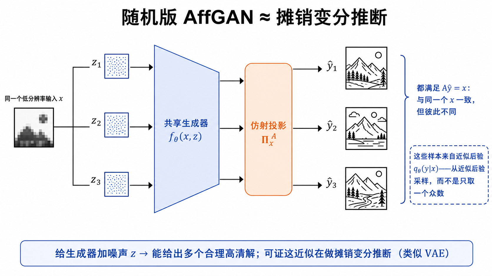
总结 · §6
一页回顾：MAP → 投影 → 交叉熵 → 三种求解方法
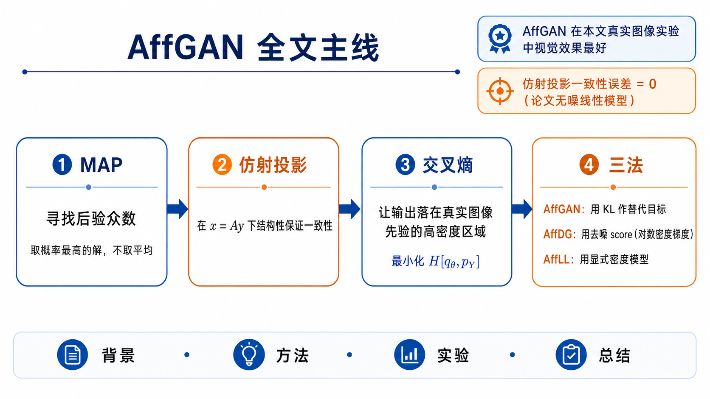
与 PRSR 的呼应 ▸ PRSR 显式建模条件分布并逐像素采样；确定性 AffGAN 前馈一次输出近似 MAP 解。附录 F 再把 AffGAN 扩展为从近似后验 qθ(y|x) 采样。
Amortised MAP Inference for Image Super-Resolution · ICLR 2017
谢谢 · Q&A
讨论留给大家：
· 在 A 已知、线性且伪逆可求时，仿射投影能否接到现有 SR 模型？
· "众数 vs 采样"——在你的任务里更想要哪一个？
· 实例噪声与扩散模型的加噪调度，有哪些共同点和根本区别？
主线回顾：MAP → 仿射投影 → 交叉熵 → 三种求解方法